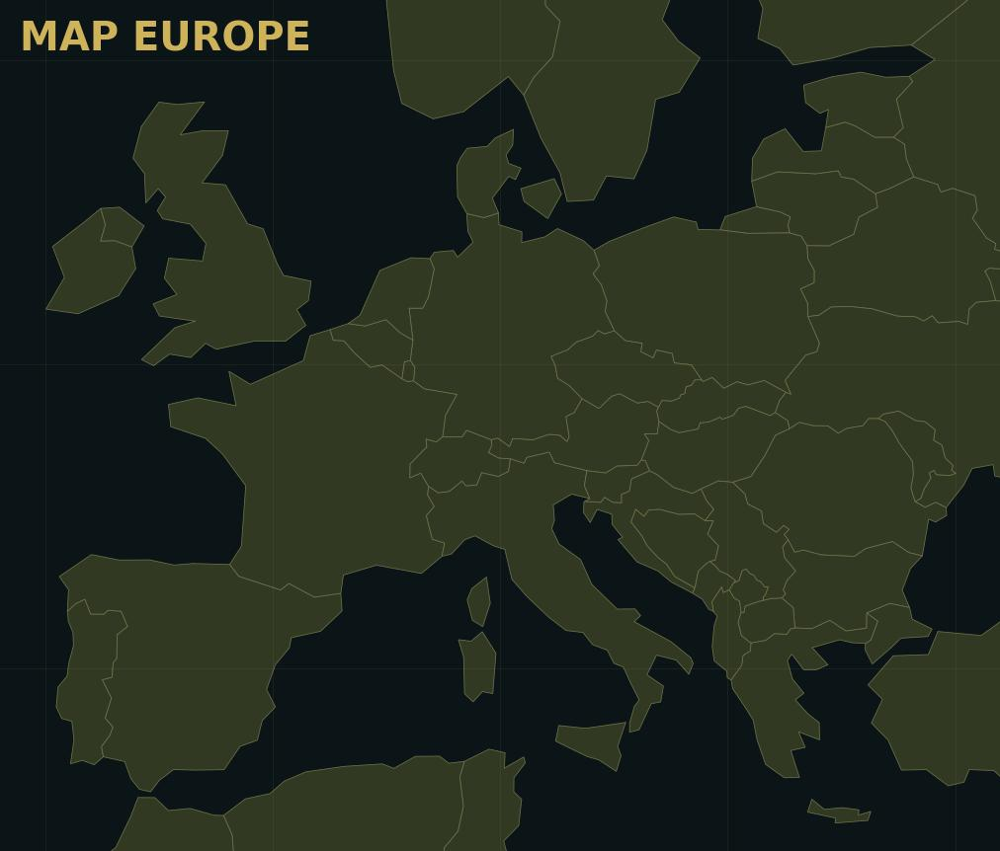
Article
Battle of Britain map route for modellers
RAF airfields, Luftwaffe approach routes, squadron markings and useful Hurricane/Spitfire/Bf 109 links.
More varied modelling articles, theatre reading routes and practical build guides with aircraft-specific imagery rather than repeated placeholders.
The article grid now uses varied images and includes theatre-map reading routes so the maps link to useful things people can actually read.

RAF airfields, Luftwaffe approach routes, squadron markings and useful Hurricane/Spitfire/Bf 109 links.
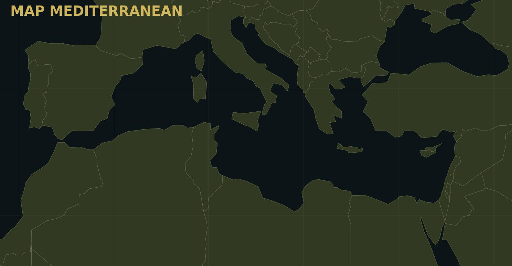
Malta, North Africa and Italy: desert wear, sun-faded camouflage and mixed Allied/Axis subjects.
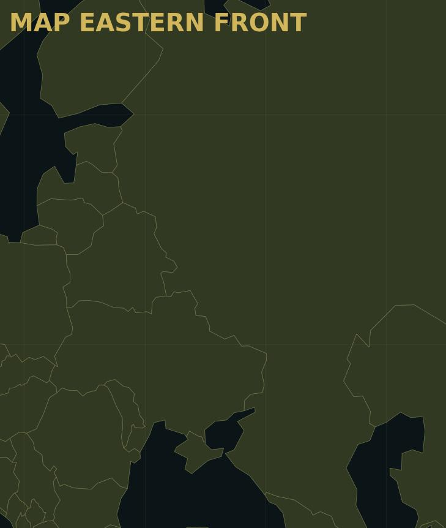
VVS and Luftwaffe subjects, winter whitewash, rough fields and harsh operational weathering.
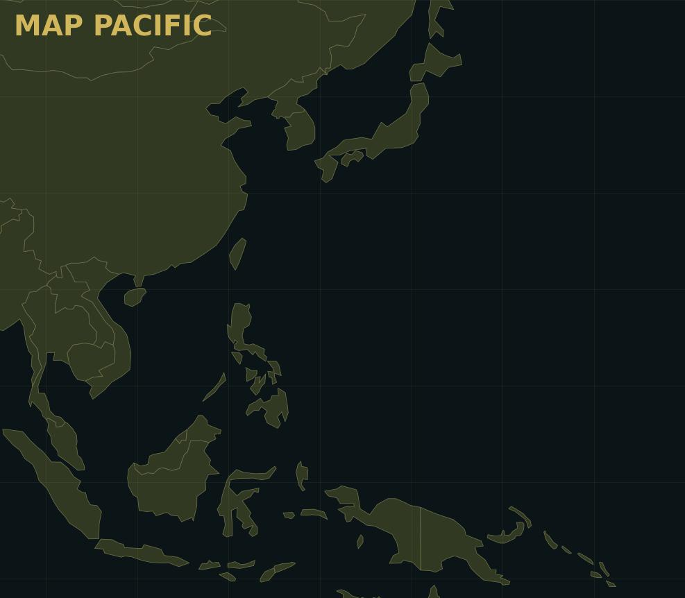
Carrier aircraft, island bases, salt fading, heavy sun exposure and Japanese/US Navy colour routes.
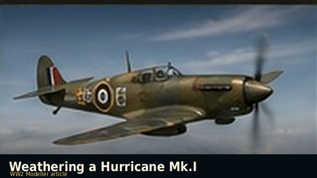
Hurricane exhaust, gun staining and muddy airfields.
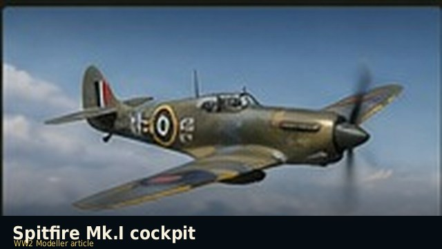
Seatbelts, panels, washes and dry-brushing.
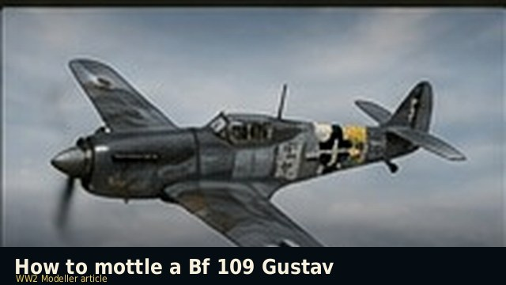
Bf 109 camouflage and airbrush control.
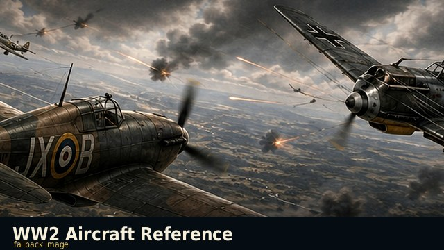
Panel lines, grime and surface modulation.
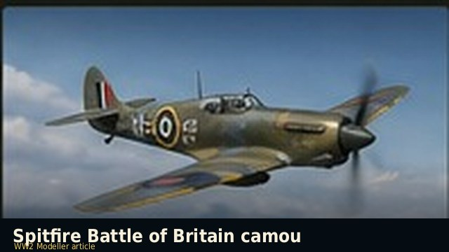
RAF colour route for Battle of Britain Spitfires.
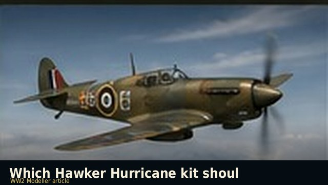
Which Hurricane kit to buy and why.
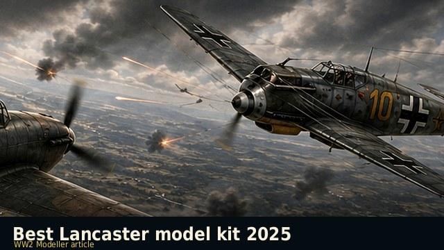
Bomber kit options and build routes.
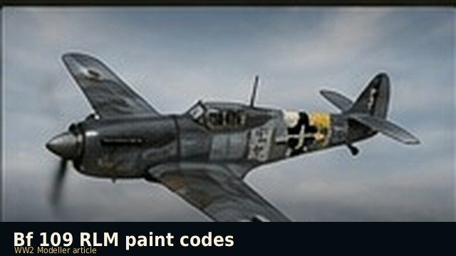
RLM colour cross-reference for model paint.